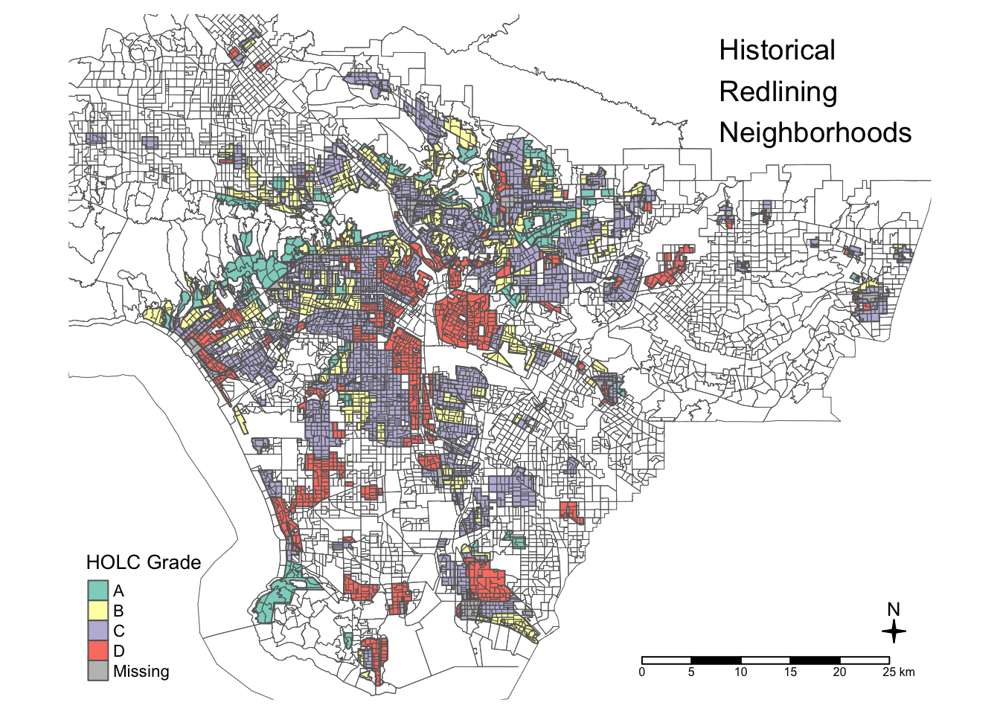
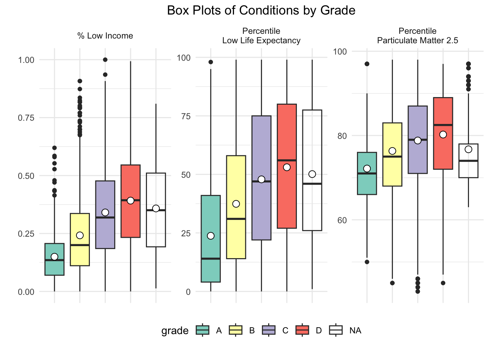
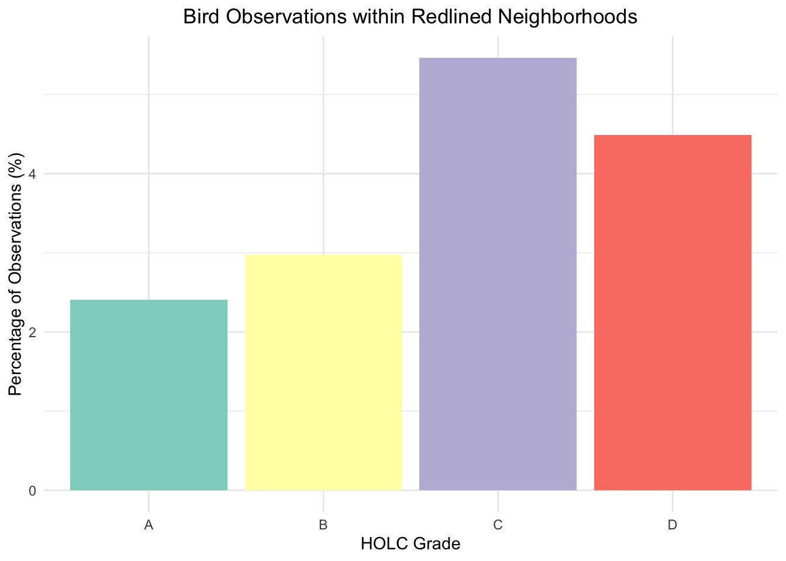

suppressMessages(library(sf))
suppressMessages(library(here))
suppressMessages(library(tmap))
suppressMessages(library(dplyr))
suppressMessages(library(tidyr))
suppressMessages(library(knitr))
suppressMessages(library(kableExtra))
suppressMessages(library(ggplot2))Environmental Justice
Exploring patterns of environmental justice
Exploring Patterns of Environmental Justice
Injustices in the past can be reflective of the present day environmental injustices in the same regions, given that the regions are still within the same ranking. The Home Owners’ Loan Corporation (HOLC) grades are a ranking of safety in the neighborhoods from the 1930’s. Neighborhoods with ranking are redlined These redlined neighborhoods have been correlated with decrease in wealth, health, along with increase in heat, and greenery as ranking is worse. Biodiversity has recently been associated with the ranking. There is concern on how conservation decisions are made based on lack of data in these neighborhoods. In this analysis, the LA region will be explored for HOLC grade, specific EJScreen variables, and biodiversity.
Load libraries
- Libraries necessary to execute code
Read in data and transform crs
- Read in data, transform crs, and filter
# Ejscreen data, transform coordinate reference system
ejscreen <- st_read(here::here("data", "ejscreen/EJSCREEN_2023_BG_StatePct_with_AS_CNMI_GU_VI.gdb")) %>%
st_transform(crs = 4326)
# Ejscreen data, filter to CA
ca_ejscreen <- ejscreen %>%
filter(STATE_NAME == "California")
# Ejscreen data, filter to LA
la_ejscreen <- ca_ejscreen %>%
filter(CNTY_NAME == "Los Angeles County")
# HOLC data, transform coordinate reference system
holc <- st_read(here::here("data", "mapping-inequality/mapping-inequality-los-angeles.json")) %>%
st_transform(crs = 4326)
# Biodiversity data, transform coordinate reference system
biodiversity <- st_read(here::here("data","gbif-birds-LA/gbif-birds-LA.shp")) %>%
st_transform(crs = 4326)
# HOLC data, filter 2022
biodiversity_22 <- biodiversity %>%
filter(year == "2022")Part 1: Legacy of redlining in current environmental (in)justice
- Visualize data with map and summary
# Make geometries valid
holc <- st_make_valid(holc)
# Set tmap mode to plot
tmap_mode("plot")tmap mode set to plotting# Create map
map <- tm_shape(holc) + # Add HOLC data
tm_fill("grade",
title = "HOLC Grade") + # Legend title
tm_borders() +
tm_shape(la_ejscreen) + # Add LA EJScreen data
tm_borders(lwd = 0.5) + # Border width
tm_layout(title = "Historical\nRedlining\nNeighborhoods", # Title
title.position = c("right", "top"), # Title position
legend.position = c("left", "bottom"), #Legend position
legend.title.size = 1.0, # Legend size
title.size = 1.2, # Title size
frame = FALSE) + # Eliminate frame
tm_compass(position = c("right", "bottom"), type = "4star", size = 1) + # Compass
tm_scale_bar(position = c("right", "bottom")) # Scale bar
# Print map
print(map)
- The map is of the LA region from the EJScreen data with HOLC grade in designated color to visualize clusters of each grade.
# Summary
holc_summary <- holc %>% # Data
mutate(grade = ifelse(is.na(grade), "None", grade)) %>% # Mutate NA to None
group_by(grade) %>% # Group by grade
summarise(count = n(), # Count total
percent = (count / nrow(holc)) * 100, # Calculate percent
.groups = 'drop') %>% # Keep regular data frame
select(grade, count, percent) %>% # Select
st_drop_geometry() # Remove geometry from output table
# Display summary table
holc_summary %>%
kable(format = "html", caption = "Summary of HOLC Grades") %>% # Format
kable_styling("striped", full_width = F) # Style| grade | count | percent |
|---|---|---|
| A | 57 | 13.6690647 |
| B | 121 | 29.0167866 |
| C | 167 | 40.0479616 |
| D | 71 | 17.0263789 |
| None | 1 | 0.2398082 |
- Summary table of the percent per HOLC grade with count to help with visualzing the map.
- Join HOLC data and LA EJScreen data to visualize mean of specific variables with boxplots and summary.
| Variable | Description |
|---|---|
| % Low Income | Percentage of the population with low income |
| Percentile for Particulate Matter 2.5 | Percentile ranking for exposure to Particulate Matter 2.5 |
| Percentile for Low Life Expectancy | Percentile ranking for life expectancy in the population |
# Join data for mean by grade
joined_data <- st_join(holc, la_ejscreen, join = st_intersects)# Transform data to plot
long_data <- joined_data %>% # Data
select(grade, LOWINCPCT, P_PM25, P_LIFEEXPPCT) %>% # Select
pivot_longer(cols = c(LOWINCPCT, P_PM25, P_LIFEEXPPCT), # Columns
names_to = "variable",
values_to = "percentile")
# Create box plots
ggplot(long_data, # Data
aes(x = grade, y = percentile, fill = grade)) + # Aesthetics
geom_boxplot() + # Boxplot
stat_summary(fun = mean, # Add mean function
geom = "point", # Geometry point
color = "black", # Color
size = 3, # Size
shape = 21, # Shape
fill = "white") + # Fill
labs(title = "Box Plots of Conditions by Grade", # Title
x = "Grade", # X label
y = "") + # Y label
facet_wrap(~ variable, # Wrap by variable
scales = "free_y", # Adjust y axis limits
labeller = as_labeller(c( # Customize labels
LOWINCPCT = "% Low Income",
P_PM25 = "Percentile\nParticulate Matter 2.5",
P_LIFEEXPPCT = "Percentile\nLow Life Expectancy"
))) +
scale_fill_brewer(palette = "Set3") +
theme_minimal() + # Theme
theme(axis.text.x = element_blank(), # Remove x-axis text
axis.title.x = element_blank(), # Remove x-axis title
legend.position = "bottom", # Legend position
plot.title = element_text(hjust = 0.5)) # Title position
- Boxplots of the specific variables with mean point to visualize between the HOLC grade.
# Calculate means for specified variables
conditions_summary <- joined_data %>% # Data
group_by(grade) %>% # Group by
summarise( # Summary
mean_low_income = mean(LOWINCPCT, na.rm = TRUE),
mean_particulate_matter = mean(P_PM25, na.rm = TRUE),
mean_low_life_expectancy = mean(P_LIFEEXPPCT, na.rm = TRUE),
.groups = 'drop' # Ungroup
) %>%
rename( # Rename columns
"% Low Income" = mean_low_income,
"Percentile Particulate Matter" = mean_particulate_matter,
"Percentile Low Life Expectancy" = mean_low_life_expectancy
) %>%
select(grade, `% Low Income`, `Percentile Particulate Matter`, `Percentile Low Life Expectancy`) %>% # Select
st_drop_geometry() # Remove geometry output
# View summary
conditions_summary %>%
kable(format = "html", caption = "Summary of Conditions by Grade") %>% # Format
kable_styling("striped", full_width = F, position = "center") %>% # Style
add_header_above(c(" " = 1, "Mean Values" = 3)) # Header| grade | % Low Income | Percentile Particulate Matter | Percentile Low Life Expectancy |
|---|---|---|---|
| A | 0.1497511 | 72.16036 | 23.75982 |
| B | 0.2420120 | 76.33898 | 37.42025 |
| C | 0.3408981 | 78.81884 | 47.88017 |
| D | 0.3919059 | 80.23700 | 53.03621 |
| NA | 0.3581823 | 76.72973 | 50.12409 |
- Summary table of the mean values per HOLC grade for specific variables including NA’s.
Results
The map of the HOLC grade in the LA region gave the idea of where and how often a grade appears in the region. It is easy to see that grade C is most commonly seen in the region but does that hold true per neighborhood since neighborhoods could be different sizes. The summary table that followed the map further helped determine which grade was the most common in the region. Grade C is the most common in the region. Interestingly grade D is not the second most common grade in the region though the map seems to represent that when looking at the colors.
The boxplots for the mean of % low income, percentile for Particulate Matter 2.5, and percentile for low life expectancy give a better idea on how much HOLC grade could matter. It is clear that there is an increase in all variables towards grade d. The summary table that followed the boxplots further helped determine the exact mean and the increase towards grade d. Further analysis would be necessary to determine correlation but it is a good speculation to say that these hazardous poor neighborhoods have worse environmental conditions that lead to younger deaths. Again, it is not assumed but speculated and other factors would need to be analyzed or researched.
Part 2: Legacy of redlining in biodiversity observations
- Join HOLC data and Biodiversity data to visualize bird observations per HOLC grade
# Perform spatial join to associate bird observations with HOLC grades
observations_holc <- st_join(biodiversity_22, holc, join = st_intersects) # Save total observations, including NAs
total_observations <- nrow(observations_holc)
# Filter redlined observations
redlined_observations <- observations_holc %>%
filter(!is.na(grade)) %>% # Remove NAs
group_by(grade) %>% # Groupby
summarise(redlined_count = n(), .groups = 'drop') %>% # Summary
mutate(total_count = total_observations, # Add columns
percent_redlined = (redlined_count/total_count) * 100)
# Create a bar plot
ggplot(redlined_observations, # Data
aes(x = grade, y = percent_redlined, fill = grade)) + #Aesthetics
geom_bar(stat = "identity") + # Bar chart with behavior
labs(title = "Bird Observations within Redlined Neighborhoods", # Title
x = "HOLC Grade", # X label
y = "Percentage of Observations (%)") + # Y label
scale_fill_brewer(palette = "Set3") + # Color palette
theme_minimal() + # Theme
theme(legend.position = "none", # No legend
plot.title = element_text(hjust = 0.5))
- Bar plot of bird observations percentage within redlined neighborhoods per HOLC grade.
# Create summary
summary <- redlined_observations %>% # Data
select(grade, redlined_count, total_count, percent_redlined) %>% # Select
rename( # Rename columns
"Redlined neighborhoods" = redlined_count,
"Total" = total_count,
"Percent within redlined neighborhoods" = percent_redlined
) %>%
st_drop_geometry() # Remove geometry from output
# View summary
summary %>%
kable(format = "html", caption = "Summary of Redlined Observations by Grade") %>% # Format
kable_styling("striped", full_width = F, position = "center") %>% # Style
add_header_above(c(" " = 1, "Observation Count" = 2, "Percentage" = 1)) # Label| grade | Redlined neighborhoods | Total | Percent within redlined neighborhoods |
|---|---|---|---|
| A | 1073 | 44641 | 2.403620 |
| B | 1329 | 44641 | 2.977084 |
| C | 2439 | 44641 | 5.463587 |
| D | 2004 | 44641 | 4.489147 |
- Summary table of the percent of observations in the redlined neighborhoods, total count, and redlined count.
Results
The bar plot for bird observations within redlined neighborhoods show that there are more observations withing grade c neighborhoods. The summary table that follows the bar plot further helps determine the observation count in redlined neighborhoods compared to the total. There are more grade c neighborhoods so that could be the reason why, considering the size of neighborhoods is not defined. Thinking back to the initial map of HOLC grade in the LA region, the abundance of grade c neighborhoods could be why the birds observations are higher in these redlined neighborhoods. I don’t see the correlation between observations and redlined regions considering the map shows grade c to be the most popular in the region but grade d does not follow the same pattern so maybe there is something to say about it. I would consider looking at area of the HOLC grade neighborhoods before making any assumptions.
The analysis might support findings from Ellis-Soto et al. 2023 because there is a small number of observations which was highlighted in the article. I would first compare the regions with an HOLC grade and the regions without and HOLC grade. Within the HOLC grade regions, I do think there is a difference but as I stated before, there could be other factors that explain that.
References
Data
Richmond University Digital Scholarship Lab. (n.d.). Redlining Data. Retrieved from https://dsl.richmond.edu/panorama/redlining/data
U.S. Environmental Protection Agency. (n.d.). Download EJSCREEN Data. Retrieved from https://www.epa.gov/ejscreen/download-ejscreen-data
Libraries
Constructing Complex Tables: Zhu, H. (2023). kableExtra: Construct Complex Tables for R Markdown. R package version 1.3.4. https://cran.r-project.org/package=kableExtra
Data Manipulation: Wickham, H., & François, R. (2023). dplyr: A Grammar of Data Manipulation. R package version 1.1.0. https://CRAN.R-project.org/package=dplyr
Data Tidying: Wickham, H. (2023). tidyr: Tidy Messy Data. R package version 1.3.0. https://CRAN.R-project.org/package=tidyr
Data Visualization: Wickham, H. (2023). ggplot2: Elegant Graphics for Data Analysis. R package version 3.4.0. https://ggplot2.tidyverse.org/
Here: Müller, K. (2023). here: A Package for Easy File Path Handling. R package version 1.0.1. https://CRAN.R-project.org/package=here
Simple Features for R: Pebesma, E. J., & Bivand, R. S. (2023). sf: Simple Features for R. R package version 1.0-8. https://CRAN.R-project.org/package=sf
Thematic Maps: Tennekes, M. (2023). tmap: Thematic Maps. R package version 3.3. https://cran.r-project.org/package=tmap